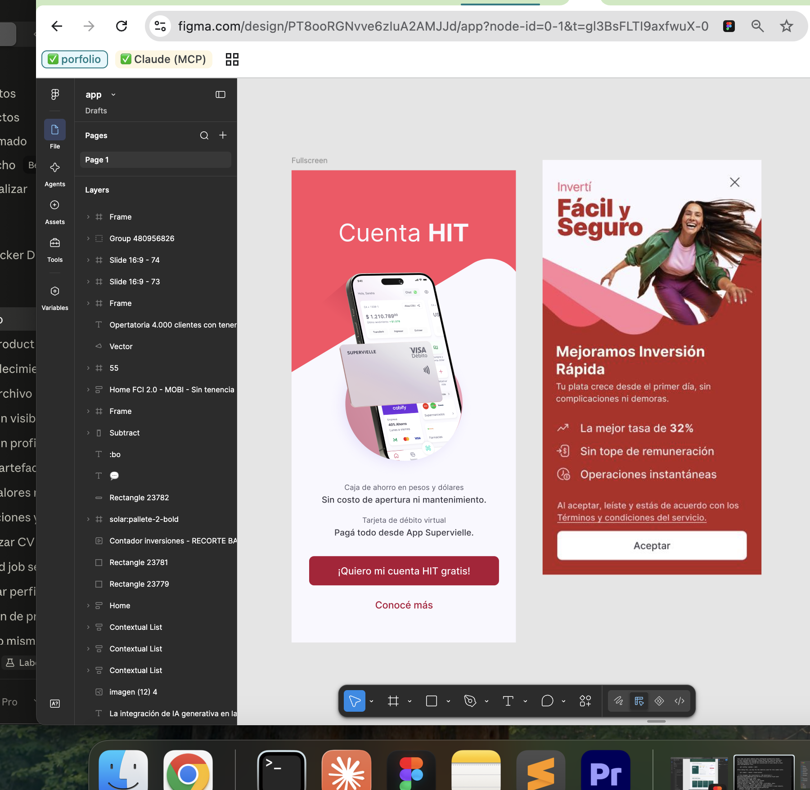

La oportunidad
La banca que viene no es la app de siempre — es el ecosistema que resuelve todas las finanzas en un solo lugar.
Nubank, Revolut, N26 y las grandes superapps asiáticas redefinieron el estándar: fricción cero, ecosistemas conectados, motion que enamora. El desafío no era hacer una app mejor — era cambiar el modelo de plataforma.
Nubank
N26
Revolut
Mercado Pago
Alipay
Gojek
WeChat
Rappi
